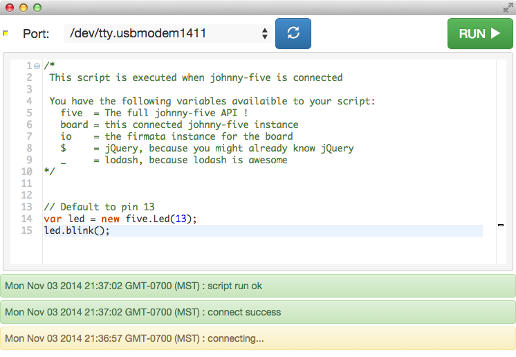

chromebots lowering the barrier to entry
october 4th 2014
Have you ever wanted to control lights, motors, cameras, or even full terminator style robots using Javascript? Well it turns out, it's easier than you think, and quickly getting even easier.
Just fire up NodeJS and Johnny-Five then plugin an Arduino and write some Javascript.
Ok, that might be a bit much for someone without any development experience :)
I'd really recommend taking a look at nodebots.io as it is a great community to help get you up and running.
Your eight year old can code.
While running a Nodebots day and later doing some talks/workshops at a local programming conference, I noticed something. When someone first toggles an LED with code, a light also goes on in their head. Once the physical world is bridged to software, possibilities open up. Young people really get this.
Here in my hometown there's a really cool group called the Mesa Code Club. A group of volunteers led by Kelly Smith have been meeting at the public library to kids how to code. They recently had a kickstarter that helped them to fund their 501c3 status as well as purchase Chromebooks for the kids to code on. They're doing really cool things with JavaScript including HTML5 game development.
Kelly has proven that very young people with some guidance take well to programming, so how about we get everyone even more tools to play with?
Enter Chromebots
Using Johnny-Five, Rick Waldron's recent firmata.js enhancements, Glenn Arrowsmith's browser serial-port implementation, and a few other pieces, I've put together a simple Chrome packaged application that allows you to build NodeBots without even installing Node.

Install it from here: Johnny-Five Chrome
Source for it is here: https://github.com/monteslu/j5-chrome
And here's a video demo of it:
The code example for the Sainsmart LCD screen is based off the Johnny-Five LCD example with the pins setup to match the LCD shield and turn on the backlight:
var p = new five.Pin(10);
p.write(10, 1);
var lcd = new five.LCD({
pins: [8, 9, 4, 5, 6, 7],
});
lcd.on("ready", function() {
lcd.clear().print("CHROMEBOTS");
});The app handles establishing the Nodebot and the code is run when the johnny-five fires its ready event.
Aside from Johnny-Five, you also have jquery, lodash, skynet, and the typical browser variables to build things with.
Barrier Lowered?
We still need at least one person to use the Arduino Development Environment to flash the Standard Firmata sketch onto the Arduinos. However once that's done, anyone can use just an Arduino and a chromebook to get started.
What about Firefox?
For the most part the code is pretty portable, however there currently isn't a Serial Port implementation in Firefox. Hopefully that gets fixed soon.
The other part that needs some attention is that chrome apps don't have access localStorage, so the app has to use the chrome.storage API to save anything locally. Not a big fan of this, but its easy enough to shim in the codebase.
-Luis